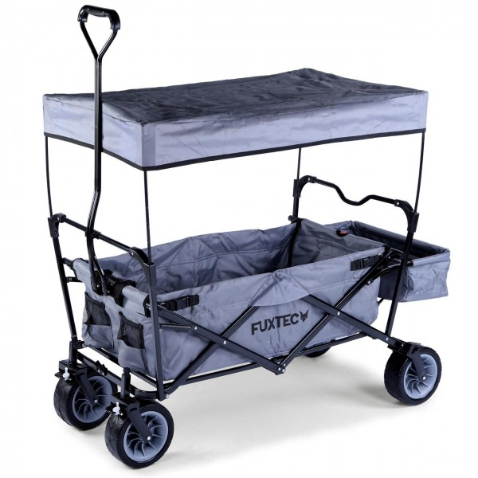
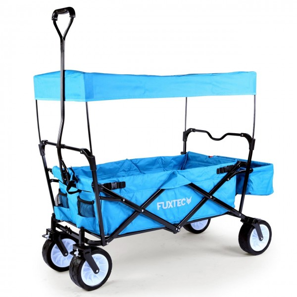
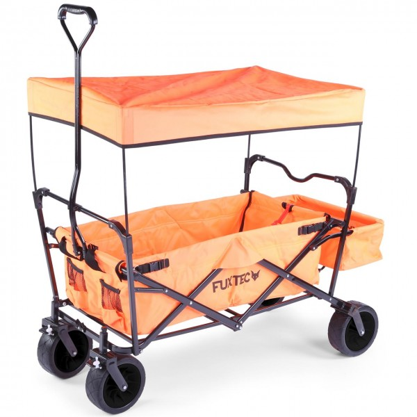
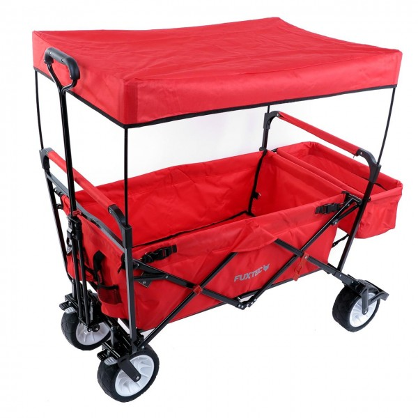

|  |  |  |  | |
| Modell | BW100 | JW76C | CT500 | CT700 |
| MaBe zusammengeklappt (LxBxH) |
20x60x78 cm | 20x60x83 cm | 20x60x78 cm | 20x54x76 cm |
| MaBe aufgestellt (LxBxH) |
120x60x66 cm (100 mit Dach) | 120x60x75 cm (110 mit Dach) | 120x60x66 cm (100 mit Dach) | 101x54x76 cm (100 mit Dach) |
| Gewicht | 12,4 kg | 12,0 kg | 13,5 kg | 13,7 kg |
| Raddurchmesser / Radbreite |
19 cm / 7,5 cm | 19 cm / 7,5 cm | 19 cm / 5 cm | 19 cm / 5 cm |
| Berieifungsmerkmale | Vollprofilreifen aus Polyurthan - besonders weich und komfortabel |
Vollprofilreifen aus Polyurthan - besonders weich und komfortabel |
Vollprofilreifen aus Polyurthan - besonders weich und komfortabel |
Vollprofilreifen aus Polyurthan - besonders weich und komfortabel |
| Max. Beladungsgewicht |
75 kg | 75 kg | 75 kg | 75 kg |
| Standfunktion zusammegeklappt |
||||
| Sonnendach | UV SCHUTZ | UV SCHUTZ | UV SCHUTZ | UV SCHUTZ |
| Feststellbremse | ||||
| Teleskopfuhrungsstange | ||||
| Breitreifen | ||||
| Lenkdeichsel | ||||
| Stoff abnehmbar / waschbar |
||||
| Anschnallgurt | als Zubehor erhaltlich | als Zubehor erhaltlich | als Zubehor erhaltlich | als Zubehor erhaltlich |
| Regenschutz | als Zubehor erhaltlich | als Zubehor erhaltlich | ||
| Moskitonetz | als Zubehor erhaltlich | |||
| Kuhltasche | als Zubehor erhaltlich | als Zubehor erhaltlich | als Zubehor erhaltlich | als Zubehor erhaltlich |
| Luftmatte | als Zubehor erhaltlich | als Zubehor erhaltlich | als Zubehor erhaltlich | als Zubehor erhaltlich |
| Zusatzliche Stoffvarianten |
als Zubehor erhaltlich | |||
| Vefugbare Farbvarianten |
grau, braun , orange, turkis, camouflag-army |
grau, purpur , braun |
grau, braun , orange, rot, turkis, camouflag-army |
grau, braun , purpur, rot, turkis |
| Schbgriff (verstellbar) |
||||
| Bevorzugtes Einsatzgebiet |
Idealer Einstieg in die Friezeitwe fur unebene Untergrune wie Rasenflachen ooder Strand. Die breiten Refien verhindern ein leichtes Einsinken imlosen Untergrund (bspw. Sand) und lassen so den Transport von Famlienutensilien auBerst leicht zu. Ob Picknick oder Strand, hiermist bist Du bestens gerustet fur jeden Einsatz |
Der Luxuswagen bietet neben den Breitreifen, der Feststellbremse auch eine Teleskopfuhrungs- stange wowie eine Lenkdeichsel. Dieser ermoglicht auBerst hohe Wendigkeit auch auf losem und unebene Untergrund. Die Lenkrader bieten durch die Deichsel sehr hohe Stabilitat wie bspw. Sand. Daher empfiehlt sich der JW76C als erste Wahl fur den Familienurlabu am Strand. |
Luxusgleiter mit Chromfelgen und Vollgummireifen fur bevorzugt festen Untergrund wie bspw. asphaltierte Wege. Die Reifenwahl beitet sehr hohen Dampfungs- komfort und Fahrstabilitat insbesondere fur den Transport von Kindern auf harten Boden. Daher der ideale Begleiter fur ausgedehnte Ausgluge auf befestigtem Untergrund wie Wander-wege oder der Spazier-gang durch die Stadt. |
Der neue Luxuswagen nun auh mit zusatzlichem Schiebegriff und weiterer Bremse hinten fur noch mehr Kontrolle und Sicherheit. Ausgelegt fur einen bevorzugt festen Untergrund wie bspw. asphaltierte Wege besitzt er Chromfelgen und vollgummireeifen. Idealer Begleiter fur langere Ausfluge auf befestigtem Untergrund wie Wanderwege oder der Spaziergand durch die stadt. |